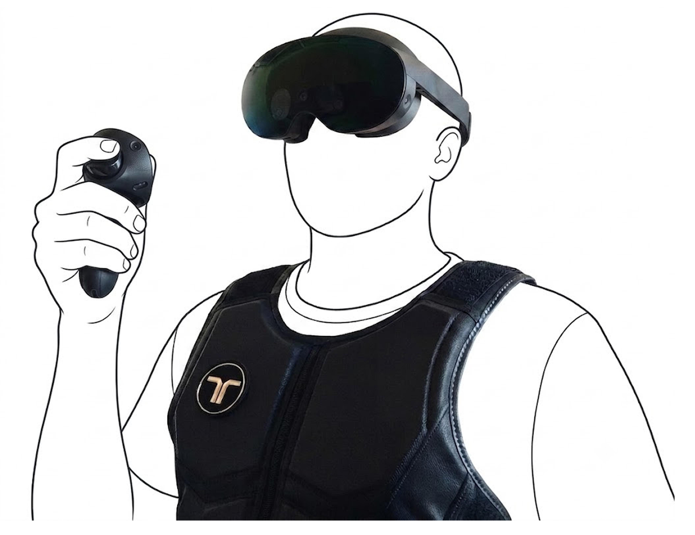
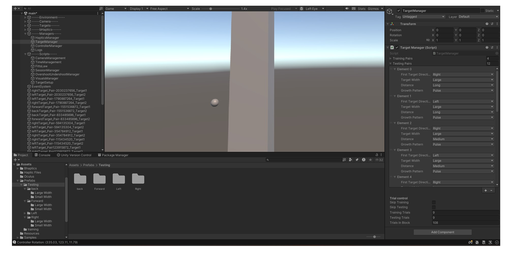
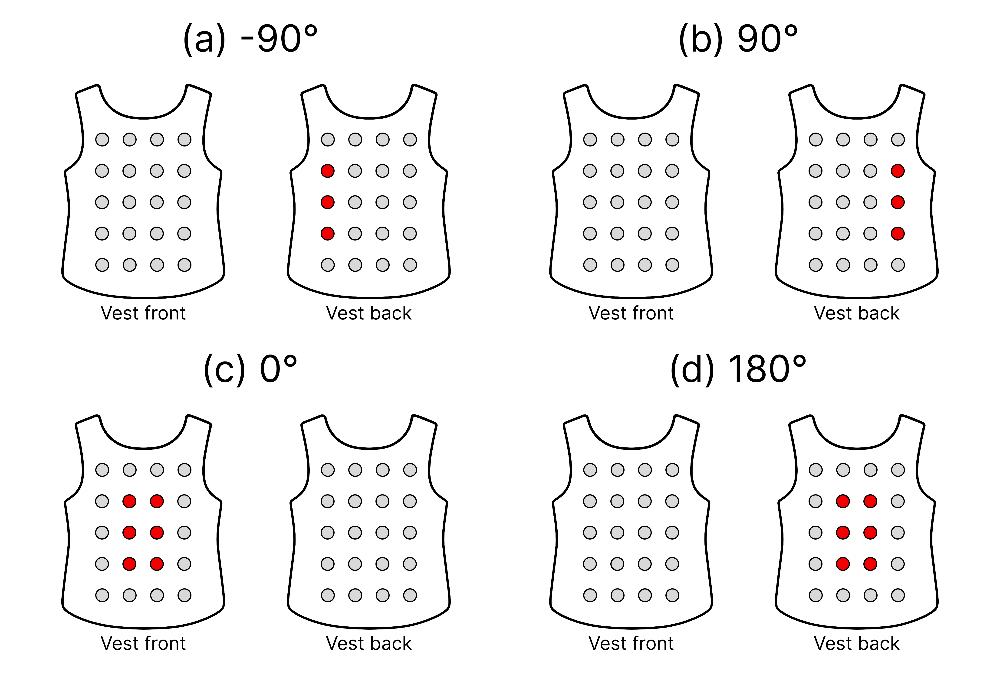
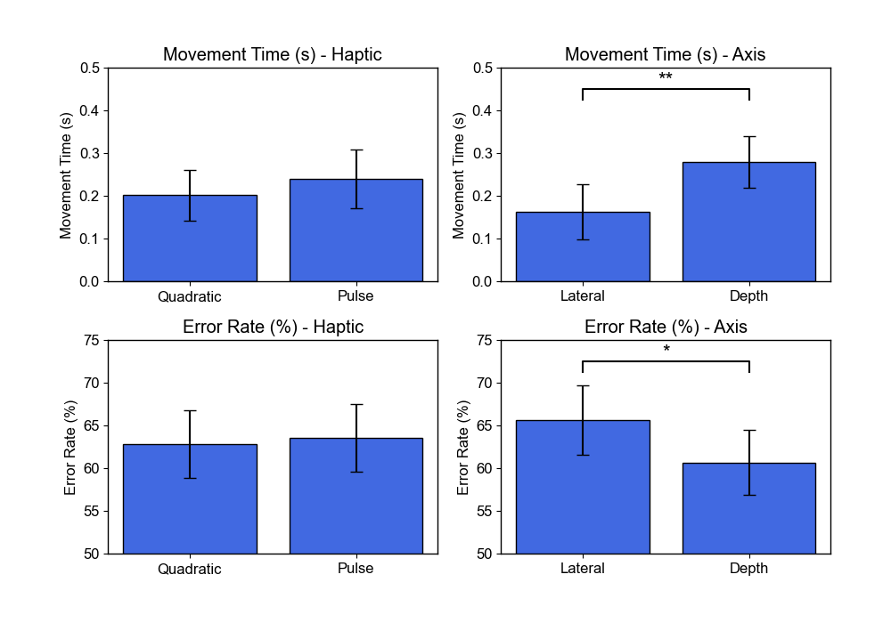
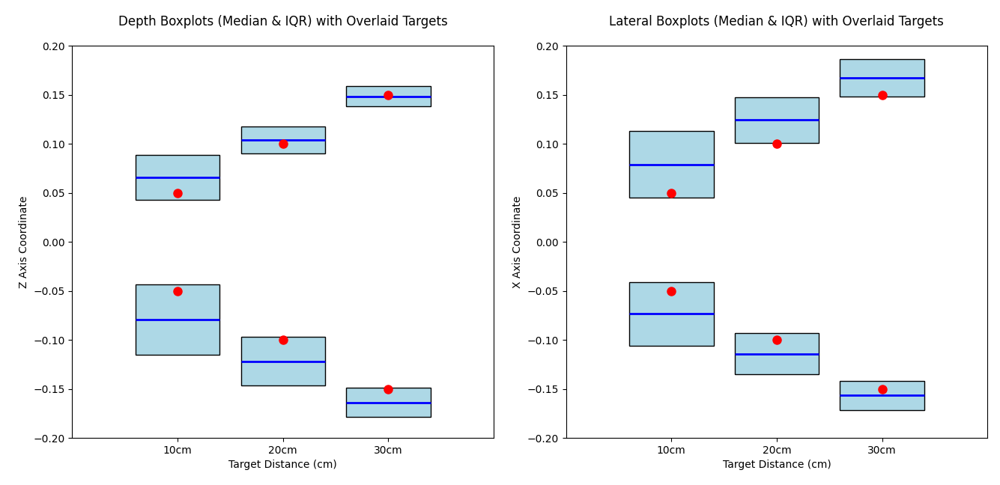

Vibrotactile-Only Virtual Reality Target Selection
Empirical VR Study with 32 BLV Users
Virtual reality (VR) usually relies on what you can see, which leaves out people who are blind or have low vision (BLV). In this study, I tested whether 32 BLV people could use a vibrating vest and handheld controller to find and select invisible targets in VR, relying entirely on their sense of touch. I found a complex trade-off: on average, side-to-side movements were faster but less accurate than moving forwards and backwards. Surprisingly, users made more mistakes when targets were closer together, different behaviour from what is observed with sighted users in existing studies. While participants really enjoyed the experience and saw huge potential, the high error rates show that standard vibrations aren't enough for high-precision tasks on their own, highlighting the need for alternative feedback designs in accessible VR.
Project Overview
Virtual reality (VR) mixed method study with 32 blind and low vision (BLV) participants, exploring unimodal vibrotactile spatial target guidance in peripersonal space across lateral and depth axes.
- 2nd ACM Europe Summer School on Accessible and Inclusive Technologies: Doctoral Lightning Talk (opens in a new tab)
- MINDS Workshop: Invited speaker (opens in a new tab)
- Open access repository (opens in a new tab) for Unity project
Problem Definition
Evaluating fundamental guidance tasks, such as pointing and selection, informs understanding of more complex high-level interactions like spatial orientation and wayfinding. Restricting the VR environment to lateral and depth movements within a seated peripersonal space isolates these core selection skills.
This study maps this space onto an off-the-shelf vibrotactile vest to guide precise hand movements for 32 BLV participants (aged 24–84). The design deliberately decouples the vibrotactile feedback: the bHaptics TactSuit x40 vest provides global awareness directions, while the handheld Meta Quest Touch Pro Controller provides local guidance binary target collision signals, avoiding sensory overload at the hand.

The literature demonstrates the utility of vibrotactile feedback for guiding BLV users in 2D interfaces and for augmenting sighted user performance in spatial target selection. However, a significant gap exists in translating these principles to fully non-visual VR contexts.
While vibrotactile cues often supplement visual information or provide alerts for obstacle avoidance in virtual environments, their use as the sole sensory substitution channel for BLV users in VR is a critical, unexplored area. This mixed-methods evaluation establishes a baseline for unimodal VR target selection with standard vibrotactile cues.

We asked:
- To what extent do unimodal vibrotactile cues facilitate accurate lateral and depth-based VR pointing movements?
- How does performance differ between lateral and depth axes?
- How does vibrotactile modulation influence performance, preference, and usability?
The mixed-methods approach, combining standardised performance data analysis (MT and Error Rate) and semi-structured interview thematic analysis, provides practitioner recommendations for the design of accessible VR interfaces, future work suggestions for researchers, and lays the groundwork for the high-level navigation empirical user study in my thesis.
Methodology
A 2x2 within-subject repeated-measures design explored movement direction (Lateral vs. Depth) and haptic growth modulation on the vest. Distance was conveyed using a ‘hot/cold’ metaphor via two counterbalanced modalities:
- Continuous Quadratic Modulation: Continuous vibration where amplitude dynamically updated using a non-linear inverse quadratic function (an ‘ease-in’ effect clamping at 100% intensity at the target).
- Intermittent Pulse Modulation: A gated vibration at a fixed 100% amplitude where pulse frequency increased linearly (from 1 Hz to 5 Hz) as the participant neared the target.
Testing occurred with 32 unpaid participants recruited from across the UK to ensure evaluations could be conducted in locations suitable for the BLV participants.


.png)
The task involved reciprocal selection between 3D targets along either the Lateral or Depth axis. Six commonly used indices of difficulty (IDs) were explored, derived from a factorial combination of three target Euclidean Distances (10, 20, 30 cm) and two Widths (1.5, 3.5 cm).
In summary, the experimental design was as follows:
- Total blocks per participant: 4 (one for each direction × feedback method combination)
- Total trials per block: 108 (6 IDs × 9 trials × 2 repetitions)
- Total trials per participant: 432
- Total dataset: 13,824 trials across all participants
Quantitative Results
Key significant results included a high overall Error Rate (mean 63.19%), indicating that standard off-the-shelf vibrotactile cues are insufficient for precision without multimodal augmentation. Specifics include:
- Speed-accuracy trade-off: Lateral movements were significantly faster but substantially more error-prone (65.68% error) than Depth movements (60.69% error).
- Biomechanical stability: Positive depth targets (full arm extension) and inward lateral adduction movements were significantly more accurate than movements lacking physical bodily constraints.
- Counter-intuitive distance effect: A significant interaction effect was found where smaller and closer targets yielded more errors.
- No significant differences between the continuous quadratic and intermittent pulse vest modulations.
Participants systematically overshot targets, particularly for short distances.


Qualitative Findings
Semi-structured interviews revealed:
- Performance-perception mismatch: Participants felt more confident in the accuracy of the lateral motions despite performing significantly worse statistically, likely driven by BLV biomechanical familiarity.
- Emotional fatigue: Physical fatigue was prominent for depth movements. For some, the repetitive back-and-forth motion evoked negative emotional responses associated with childhood suppression of self-stimulating "rocking" behaviours, highlighting a disability-aware design nuance.
- Multimodal desire: Strong consensus emerged on needing customisable feedback and adding audio cues to confirm target acquisition, whilst vibrotactile cues were valued as they preserve hearing for screen readers.
- Psychological benefits: High enthusiasm for the technology's potential to simulate safe real-world navigation, accessible sports, and reduce social isolation.
Reflections
Conducting this mixed-methods study with 32 BLV participants was a high point in my PhD. I want to extend my most heartfelt gratitude to the BLV community who so warmly welcomed me. I was so nervous when I started that no one would be interested in taking part in my studies. I needn't have worried. The collective embrace of me has truly reshaped me as a person.
Focusing on a foundational guidance task has been very helpful in shaping my overall thesis direction. It exposed the contrast between what is theoretically assumed about vibrotactile guidance and the physical, temporal, and emotional realities of how users actually interact with the hardware. It laid the groundwork for my third year study exploring more complex high-level navigation.
The discovery that depth-based movements, while statistically more accurate, triggered negative childhood memories of self-stimulating behaviours for some participants really reinforced why disabled users must be directly included in the design process to catch nuanced emotional impacts. For me, this qualitative interview finding was the most important takeaway from my whole three years of working on my PhD
Ultimately, the overwhelming request from participants for multimodal audio augmentation directly informed the next phase of my PhD. This study justified moving beyond unimodal haptics to explore the interplay of audio and haptic cues in higher-level navigation tasks.
Thank you for reading about my study!
Feel free to contact me for any further questions.
Read more of my case studies
Read Video Description
First-person perspective in a commercial virtual reality game, demonstrating visual evaluations of in-game accessibility features during movement.
Read Video Description
A video of swimming in virtual reality, highlighting how the user must swing their arms in a breast stroke manner to swim in the virtual water.
Read Video Description
A virtual classroom setting containing a flat-panel video of a woman performing sign language, positioned in the lower centre of the screen.